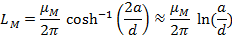
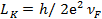
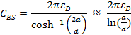
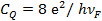
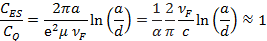

| Volume 1, Issue 1, Year 2014 - Pages 134-140 | View PDF (Full-text) |
| DOI: 10.11159/ijtan.2012.020 | Linked References |
| ISSN: 1929-1248 | |
Application of Nanotechnology in High Frequency and Microwave Devices
Parisa Moslemi¹, Golamreza Askari¹ ², Shamsoddin Mohajerzadeh², Hamid Mirmohmmad Sadeghi¹
¹Information and Communication Technology Institute
Isfahan University of Technology, Isfahan, Iran 84156-83111
p.moslemi@gmail.com; askarigh@cc.iut.ac.ir
²University of Tehran, Department of Electrical Engineering
North Kargar Street, Tehran, Iran 14395-515
mohajer@ut.ac.ir; hamidam@gmail.com
Abstract- The study of the ac properties of nano-electronic systems is one of the most discussed topics recently. To understand the high-frequency electronic properties of carbon nanotubes we should understand passive, ac impedance of a 1D quantum system. In this paper we have tried to use CNT in Substrate Integrated Waveguide (SIW) and Modified SIW (MSIW) to decrease the electrical energy loss. For this, firstly some of the basic concepts about nanoscale electromagnetic properties and the qualitative difference in circuit behavior at nanoscale is presented. Secondly the electrical properties of carbon NanoTube and graphene which are the two most technologically advanced examples have been discussed. Thirdly a comparative study of conductive and substrate loss in SIW and MSIW has been conducted for CNT-graphene system and copper system. Thus we have suggested the use of CNT-graphene instead of copper in this substrate. Simulation results with the CST Microwave Studio show 70% reduction in conductive insertion loss and 40% reduction in total insertion loss in SIW. We have also studied the use of graphene and CNT in MSIW; the result of simulation with HFSS software is also presented as well.
Keywords: Nanotechnology, Electromagnetic properties, Nanotubes, SIW, MSIW, Insertion loss
© Copyright 2012 Authors - This is an Open Access article published under the Creative Commons Attribution License terms. Unrestricted use, distribution, and reproduction in any medium are permitted, provided the original work is properly cited.
1. Introduction
Since the development of material theory and the improvement of fabrication technology, nanophase materials have gained huge attention in various fields due to their unusual properties. They can be applied in many disciplines such as chemistry, biology, physics and electrics. During recent years, enormous progress has been made in the invention and innovation of nanophase materials used in electromagnetic field, leading to the increasing interest in the study of the properties of various nano-structured composites. The research significance of such materials lies in the fact that they show the potential of acting as the bridge between the microstructure made of small-sized particles and the macrostructure of continuous media, which yields promising results in electromagnetic field. This topic continues to expand because of its potential properties and applications related to electromagnetic waves, especially the light waves (Yu-Ming et al., 2007).
The development of fabrication and characterization techniques for nanoscale electronic circuit elements has been motivated by the relentless progress of the semiconductor industry in scaling down feature sizes. At the same time, clock rates of globally pervasive digital circuitry have moved into the microwave (GHz) frequency range (Rutherglen and Burke, 2009). It seems then, that with the predicted progress towards nanometer-scale feature sizes, GHz clock rates, and microwave wireless communications as an ever increasing part of modern technology. However, a very few efforts have been made to understand the properties of circuits, interconnects, devices, and antennas with nanoscale dimensions.
The first aim of this work is to present some of the basic concepts about nanoscale electromagnetic properties and that of how circuit behavior is qualitatively different at nanometer scale feature sizes. Recently effective circuit model for the ac impedance of a capacitively contacted nanotube, and a dc contacted nanotube is proposed, which demonstrate the operation of carbon nanotube transistors at microwave frequencies (2.6 GHz). Nanotubes (and nanowires) can operate as transistors; however, this is only possible if the parasitic capacitances can be minimized. One way to do this is to use nanotubes and nanowires as the interconnects (Burke, 2003b).
The second aim is replacing of carbon nanotube and graphene sheet with copper in Substrate Integrated circuits. For this purpose a general view on SIW and verifying its insertion loss is studied. The simulation results with CST software show a very less insertion loss in SIW by using graphene and CNT instead of copper.
The third aim is simulating the new structure MSIW which is proposed by Ranjkesh and Shahabadi, 2008,2006. The results of simulating with HFSS software matched to the expectance show the difference in loss contribution of the elements of SIW and MSIW. In MSIW conductive has more contribution loss then substrate.
The forth aim is replacing of carbon nanotube and graphene sheet with copper in MSIW to adjust the loss contribution of the elements.
2. Circuit Model and Electromagnetic Properties
This section presents a discussion of the electromagnetic properties of nanoscale electrical conductors, which are quantum mechanical one-dimensional systems. Of these, carbon nanotubes are the most technologically advanced example which is mainly discussed in this section.
There is an apparent built in impedance mismatch between nanotechnology and RF. This mismatch has occupied the single-electron transistor community for many years and is now germane to the issue of nanotube-based devices (Rutherglen and Burke, 2009). Anytime the outside world is coupled at high frequency to a nanodevice, there is an inherent mismatch. This means that characterization, which is typically based on reflection, transmission, or scattering measurements, gives rise to very small signals: since the nanodevices are very small, they do not affect the microwaves very much. This is a big measurement challenge. One approach to solving this challenge is to develop excellent calibration techniques that fully characterize all of the parasitic before measuring the actual device. This is extremely time consuming, but certainly possible. Another solution is to measure the change in the microwave properties with a dc voltage, which has been successfully applied in several cases. However, one loses absolute accuracy with this technique. A final technique is to carry out measurements on many devices in parallel. However, in general it is very difficult to fabricate identical nanodevices. Measurements on parallel devices can be plagued with uncertainties, since each of individual devices is different (Rutherglen and Burke, 2009 ;Yu et al., 2005).
3. Individual Nanotubes over Ground Plane
There are three separate techniques of solving the electromagnetic of carbon nanotubes, some more general, and some more useful.
The first approach (Belarus method) is simply to write down the full 3D version of the Boltzmann transport equation (BTE), and the boundary conditions on Maxwell's equations, and claim generality and completeness. This most general approach, which was developed by Slepyan and co-workers (Yevtushenko et al., 1997).
The second method (Perdue method) is to write down the 1D versions of the Boltzmann transport equation, and to develop equivalent circuit models based on this (Salahuddin et al., 2005).
The third approach (Irvine method) develops circuits from simple physical arguments. While the least rigorous, it is perhaps the most applicable to real world situations, since it aims to understand currents and voltages at all points in a nanotube circuit (Rutherglen and Burke, 2009).
All three methods yield identical answers when their areas of prediction overlap. The Purdue method extend to more complicated geometries, which is important for understanding crosstalk in nanotube and between nanotube interconnects. Irvine method being based on Kirchhoff's laws is useful and easier to use for experimental and practical purpose. However it has less generality or rigidity.
Figure 1 shows the equivalent RF circuit model for a SWNT over a highly conducting ground plane, neglecting damping. In this approach, each of the three circuit elements in the figure is driven independently.
In the presence of a ground plane, the magnetic conductance per unit length is given by:
|
 |
(1) |
Where d is the nanotube diameter, a is the distance to the ''ground plane'', and μM is the magnetic permeability of the medium. The approximation is good within 1% for a>2d. In nano scale, LM is negligible as compared to Lk.
|
|
(2) |

μm is used for the length units because modern growth processes produce nanotubes with lengths of order micrometers and not (as of yet) meters (Rutherglen and Burke, 2009; Burke, 2003a).
The following expression is for the kinetic energy per unit length:
|
 |
(3) |
The Fermi velocity for graphene and also carbon nanotubes is usually taken as νF=800 kms-1, so that numerically:
|
|
(4) |
The electrostatic capacitance between a wire and a ground plane as shown in Figure 9 is given by:
|
 |
(5) |
Where the approximation is good to within 1% for h>2d.This can be approximated numerically as:
|
|
(6) |
The physical origin of the quantum capacitance comes from the finite density of states at the Fermi energy. Because of this, to add an extra electron to the system, it takes a finite amount of energy above the Fermi energy. The following expression is for the (quantum) capacitance per unit length:
|
 |
(7) |
The ratio of the electrostatic to the quantum capacitance is then given by:
|
 |
(9) |
Thus, when considering the capacitive behavior of nanoelectronic circuit elements, both the quantum capacitance and the electrostatic capacitance must be considered (Rutherglen and Burke, 2009; Burke et al., 2006; Burke, 2003a,b)
Also the dc resistance per unit length is estimated at about 6kΩ/μm. Thus, if the ac damping is the same as the dc damping, the equivalent circuit model should include a resistance per unit length as well (Rutherglen and Burke, 2009).
Wave-velocity is the speed of energy and information propagation and, for an electromagnetic wave, must be less than the speed of light c. For a general wave of wavelength λ and frequency υ, the group velocity is given by V=λυ . For a sinusoidal wave: Vf=1/sqrt(Lk CQ) and Vf for carbon is about 810 m/s.
4. Conductor and Dielectric loss in SIW and MSIW
A waveguide is a physical structure that guides electromagnetic waves in the optical spectrum. A rectangular waveguide, is formed when the guiding layer of the slab waveguide is restricted in transverse directions. In the Substrate Integrated Waveguide (SIW), two periodic rows of plated via- holes are embedded in the substrate. They along with the top and bottom metallic layers of the substrate introduce a structure similar to the common RWs (Ranjkesh and Shahabadi, 2008).
In addition to advantages of RW, like high quality-factor and high power-handling capability, SIW technique permits to fabricate a complete circuit, using a standard printed circuit board or other planar processing techniques which produces low-loss, and high-density integration of microwave and millimetres-wave components and subsystems (Bozzi et al., 2008). For reduction of dielectric losses in the SIW, a new structure called modified substrate integrated waveguide (MSIW) was introduced in which some part of the dielectric of the substrate between periodic sidewalls has been removed (Ranjkesh and Shahabadi., 2008-2006). Figure 4 shows the Attenuation constants of the SIW and MSIW structures on RO4003C and RT5990.
Figure 5 shows Normalized dissipated powers for the SIW and MSIW structures on RT5880 substrate.
5. Graphene and CNT instead of Copper in SIW
The results suggest that graphene could out-perform copper for use as on-chip interconnects and could enhance the performance of silicon-based integrated circuit technology (Web-1).
Graphene nanowire interconnects on the scale of 20 nanometers show that their performance is comparable to the most optimistic projections for copper interconnects at that scale. At this size and under real-world conditions, graphene interconnects could probably out-perform copper with: resistivity improvement, higher electron mobility, better thermal conductivity, higher mechanical strength and reduced capacitance coupling between adjacent wires. Also the resistivity is normally independent of the dimension (Bozzi et al., 2008). On the other hand as you get into the nanometer-scale domain, the grain sizes of the copper become important and conductance is affected by scattering at the grain boundaries and at the side walls. These add up to increased resistivity, which nearly doubles as the interconnect sizes shrink to 30 nanometers.
Because graphene can be patterned using conventional microelectronics processes, the transition from copper could be made without integrating a new manufacturing technique into circuit fabrication. Experimentally, the researchers began with flakes of multi-layered graphene removed from a graphite block and placed onto an oxidized silicon substrate. They used electron beam lithography to construct four electrode contacts on the graphene, then used lithography to fabricate devices consisting of parallel nanoribbons of widths ranging between 18 and 52 nanometers (Li et al., 2004). Angstron, the first advanced materials company, offer large quantities of single atomic layer thick nano-graphene platelets (NGPs) that outperform other nanomaterials. The carbon-based NGPs aim to be cost-effective and high-quality alternatives to nanotubes (Web-2).
Because of CNT's superior transport properties, including conductivities higher than copper (Li et al., 2004), single-walled carbon nanotubes are possible candidates as interconnects in either all-nano or hybrid silicon-nano integrated circuits. In addition, the current density achievable in carbon nanotubes (≈109A cm-2) is larger than that achievable in Cu (≈107A cm-2), due to electro migration problems. An issue that has not been experimentally addressed in any detail is the high -speed performance of carbon nanotubes as interconnects.
For a single nanotube, the resistivity is lower than bulk copper. However, bulk copper resistivity values are not always attainable, due to enhanced surface scattering. So for narrow-line-width interconnects, the resistivity of Cu is larger than its bulk value. These principles are illustrated in Figure 6. For the copper resistivity, the Fuchs/Sondheimer and Mayadas/Shatzkes model are used. For the SWNT, data from Purewal is used, extrapolating to 1000C. The detailed parameters of the model may vary, but qualitative conclusions can still be drawn
The primary conclusion is that the resistivity of SWNTs is lower than bulk copper, and that surface scattering (which plagues copper at narrow line widths) is not an issue for SWNTs. Carbon nanotubes and graphene have the current density 100 times more than copper. These conclusions have motivated more detailed studies comparing Cu to SWNTs in various applications (Burke et al., 2006; Rutherglen and Burke, 2009; Yu et al., 2005; Web-2).
6. Results of Substitution of Graphene and CNT Instead of Copper in SIW and Discussion
The synthesis of nanotubes has rapidly developed, and currently the longest SWNTs synthesized are over 1 cm long. The next challenge in synthesis challenges will be to develop densely spaced SWNTs that are well aligned.
In the previous section it has been established that some materials like nano-graphen sheets and nanotubes have conductivity more than copper. Now we want to investigate the effect of changing copper vias of SIW with CNT and copper sheet of SIW with graphene plane. At first the losses in SIW were simulated with CST software. Figure 7 shows the SIW structure in CST. Then the copper was substituted with the material with conductivity 10 times higher than copper and the losses were simulated again. The simulation results in both cases for two conventional substrates (RT5880 and RO4003) are presented in table 1.
As it is shown in table 1, the reduction of conductor losses are better than %70, and the reduction of total losses are better than %35, which are remarkable. In addition, use of MSIW structure instead of SIW can reduce substrate losses without increasing conductor losses. Mixing these two conditions can lead us to the better design that will be presented in the next works.
|
Conductivity |
εr |
Surface Loss(W)/%Red |
Loss % |
Volume loss(W) |
Loss% |
Total loss(W)/%Red |
|
5.8e+007 (cu) |
2.2 |
1.90e-2 |
49.9 |
1.91e-2 |
50.1 |
3.82e-2 |
|
5.8e+008(CNT) |
2.2 |
6.1e-3/70% |
24.3 |
1.91e-2 |
75.7 |
2.53e-2/%35 |
|
5.8e+007 (cu) |
4 |
2.29e-2 |
49.8 |
2.31e-2 |
50.2 |
4.60e-2 |
|
5.8e+008(CNT) |
4 |
7.42e-3/70% |
24.3 |
2.31e-2 |
75.7 |
3.05e-2/%40 |
7. Results of Simulating of SIW & MSIW to compare their Loss Contribution
To compare the loss contribution in SIW and MSIW we simulated these two structures with HFSS software for two different substrates.
The geometry was the same as one proposed by Ranjkesh and Shahabadi, 2008 : For RO4003C substrate (εr =3.38, tan (δ) =0.0027) a=8 mm, L=2mm and w/a=0.9 and for RT5880 substrate (εr =2.2, tan (δ) =0.0009) a=10mm, L=2.2mm and w/a=0.9. Other parameters were selected as b=c=0.8mm and h= 0.7874 mm, for all structures. All metallic parts were copper with σ =5.8e+007.
The attenuation constants of the SIW and MSIW are shown in figure 9. As expected, attenuation constant of the MSIW is less than SIW.
Normalized copper and dielectric loss for RO4003C and RT5880 in SIW and MSIW are shown in figures 10 and 11. The results agree with that in (Ranjkesh and Shahabadi, 2008, 2006). The ratio of conductive loss to dielectric loss for RO4003C in SIW is nearly 0.25 but for MSIW it is nearly 49. This ratio for RT5880 in SIW is nearly 0.67 and for MSIW it is nearly 100.
8. Results of Substitution of Graphene and CNT instead of Copper in SIW & MSIW and Discussion
Using Graphene and CNT with conductivity 10 times more than copper causes decrease in conductive loss.
In other word by using conductors with more conductivity we can adjust high ratio of conductive loss to dielectric loss in MSIW. The results of simulation in HFSS are shown in figure 12, 13.
The ratio of conductive loss to dielectric loss for RO4003C in SIW is nearly 0.075 but for MSIW it is nearly 13. This ratio for RT5880 in SIW is nearly 2.2 and for MSIW it is nearly 95.
9. Conclusion
In this project we reviewed the basic concepts about nanoscale electromagnetic properties and that of how circuit behavior is qualitatively different at nanometer scale feature sizes, and then Conductive and substrate loss of Substrate Integrated Waveguide (SIW) and Modified SIW were surveyed. Use of graphene and CNT instead of copper in SIW and MSIW was studied and remarkable results were obtained.
Acknowledgements
The authors would like to thank the Information and Communication technology Institute for their facilities, contributions of this work.
References
Bozzi, M., Perregrini, L., Wu, K. (2008) Modeling of Conductor, Dielectric, and Radiation Losses in Substrate Integrated Waveguide by the Boundary Integral-Resonant Mode Expansion Method. IEEE Transactions on Microwave Theory and Techniques, 56, 12, 3153-3161 View Article
Burke, P. J., Li, Sh., Yu, Z. (2006) Quantitative Theory of Nanowire and Nanotube Antenna Performance. IEEE Transactions on Nanotechnology. 5, 4. View Article
Burke, P. J. (2003a) An RF Circuit Model for Carbon Nanotubes. IEEE Transactions on Nanotechnology. 2, 1, March 2003. View Article
Burke, P. J. (2003b) Carbon Nanotube Devices for GHz to THz Applications. University of California, Irvine, CA 92697-2625, 2003 International Semiconductor Device Research Symposium, 314-315 View Article
Li, S. D., Yu, Z, Rutherglen, C., Burke, P. J. (2004) Electrical Properties of 0.4 Cm Long Single-Walled Carbon Nanotubes. Nano Letters, 4, 2003-2007. View Article
Ranjkesh, N., Shahabadi, M. (2008) Loss Mechanism In SIW and MSIW", Progress In Electromagnetics Research B, 4, 299–309. View Article
Ranjkesh, N., Shahabadi, M. (2006) Reduction of dielectric losses in substrate integrated waveguide. Electronics Letters, 42 21 View Article
Rutherglen, Ch., Burke, P. J. (2009) Nanoelectromagnetics: Circuit and Electromagnetic Properties of Carbon Nanotubes. Wiley-VCH Verlag GmbH & Co. KGaA, Weinheim, inter-science journal, small 2009, 5, 8, 884–906. View Article
Salahuddin, S., Lundstrom, M., Datta, S. (2005) Transport effects on signal propagation in quantum wires, IEEE Transactions on Electron Devices. 2005, 52, 8. View Article
Yevtushenko, O. M., Slepyan, G. Y., Maksimenko, S. A., Lakhtakia, A., Romanov, D. A. (1997) Nonlinear Electron Transport Effects in a Chiral Carbon Nanotube, Physical Review Letters, 79, 6. View Article
Yu-Ming, W., Le-Wei, L., Bo, L. (2007) Nanoantennas: from Theoretical Study of Configurations to Potential Applications. National University of Singapore, Singapore & Data Storage Institute, Agency for Science, Technology and Research, Singapore. View Article
Yu, Z., Rutherglen, C., Burke, P. J. (2005) Scaling of the microwave and dc conductance of metallic single-walled carbon nanotubes. Integrated Nanosystems Research Facility, Department of Electrical Engineering and Computer Science, University of California, Irvine, CA 92697-2625. View Article
Website References
"Graphene may have advantages over copper for IC interconnects at the nanoscale" View Website
"Angstron claims new nano-graphene platelets outperform other nanomaterials" View Website